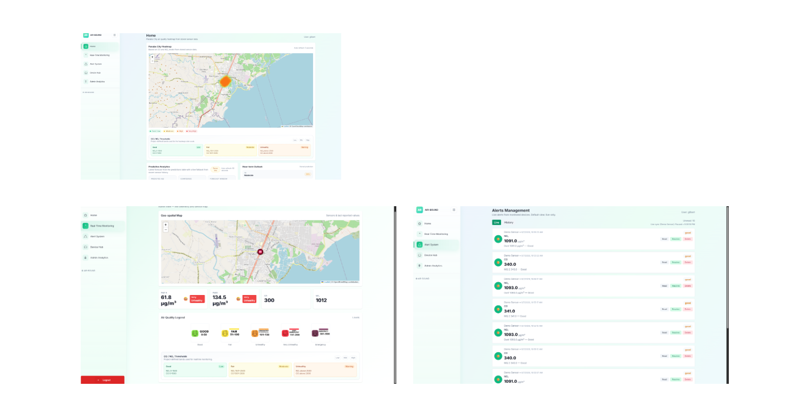
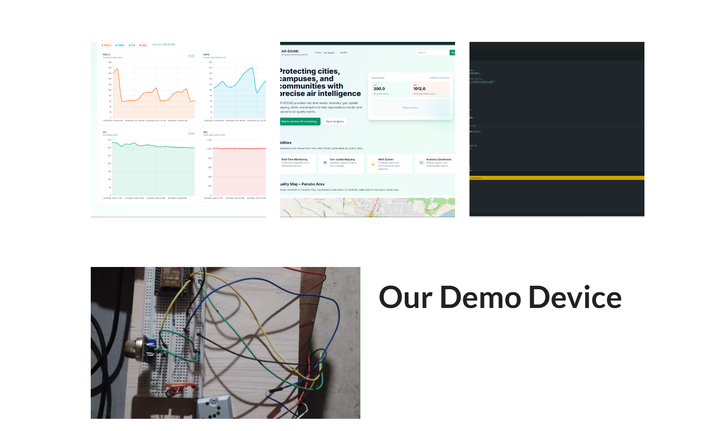
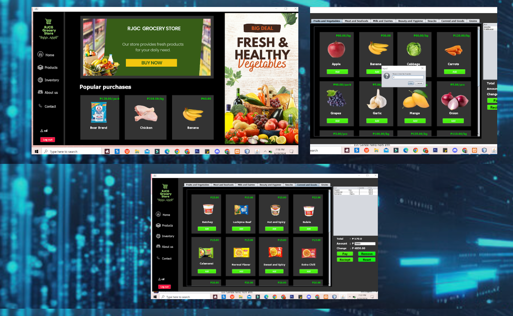
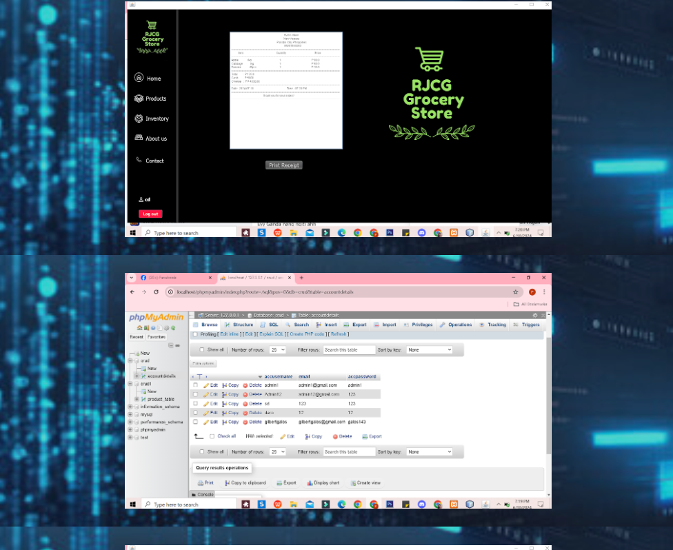
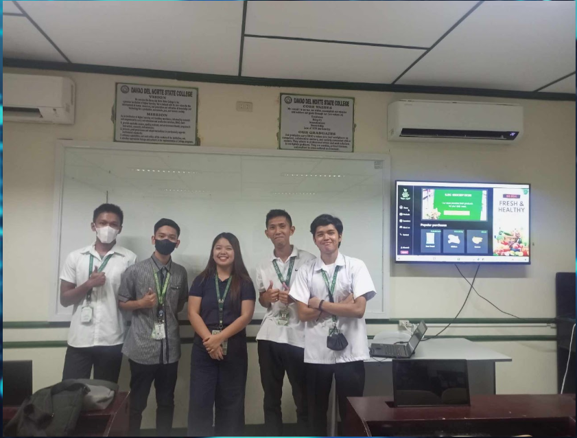
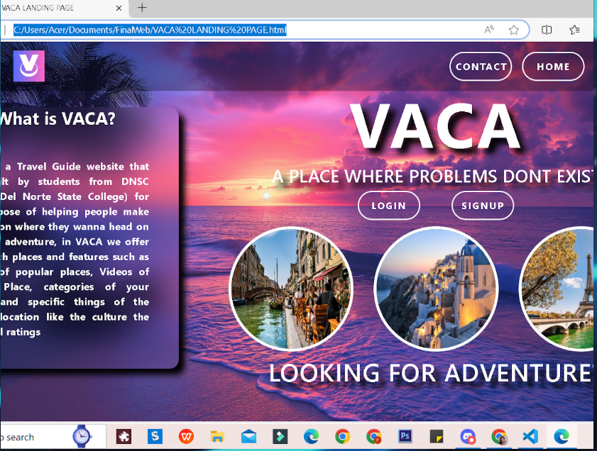
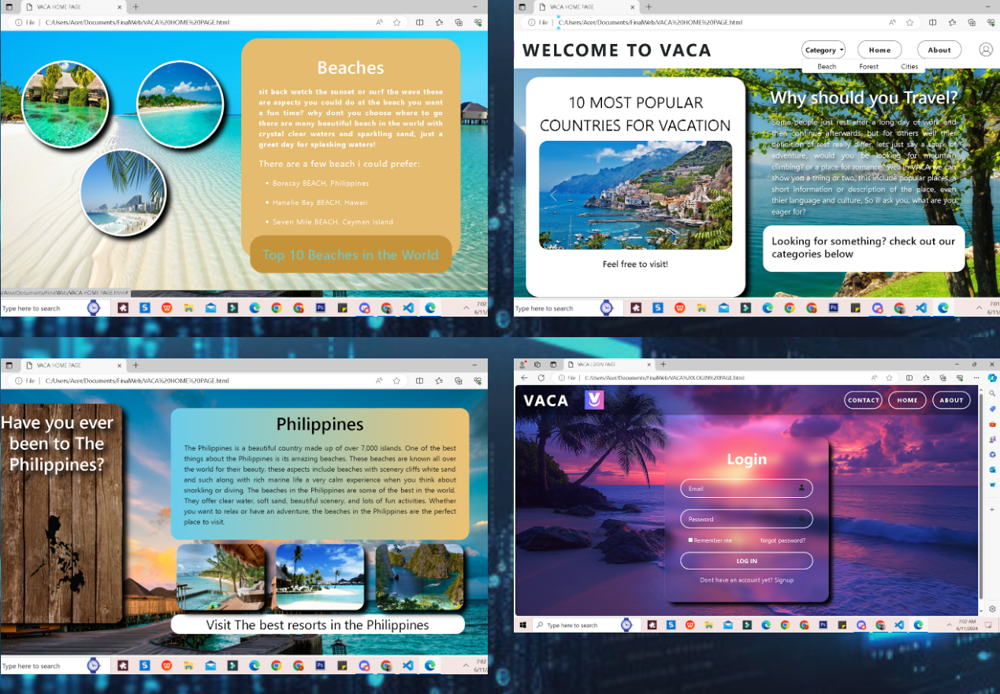
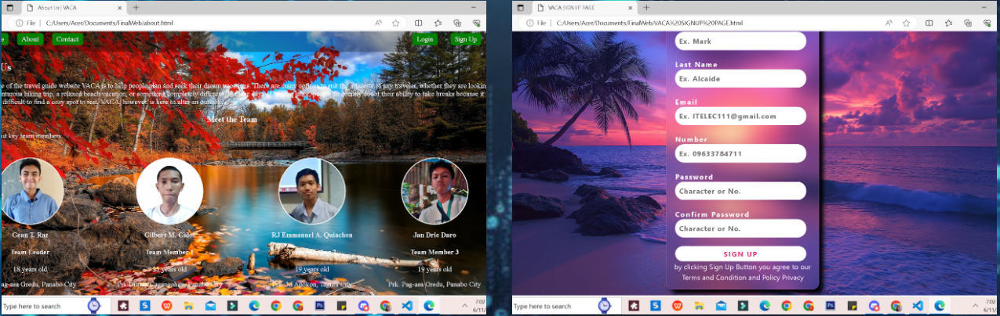
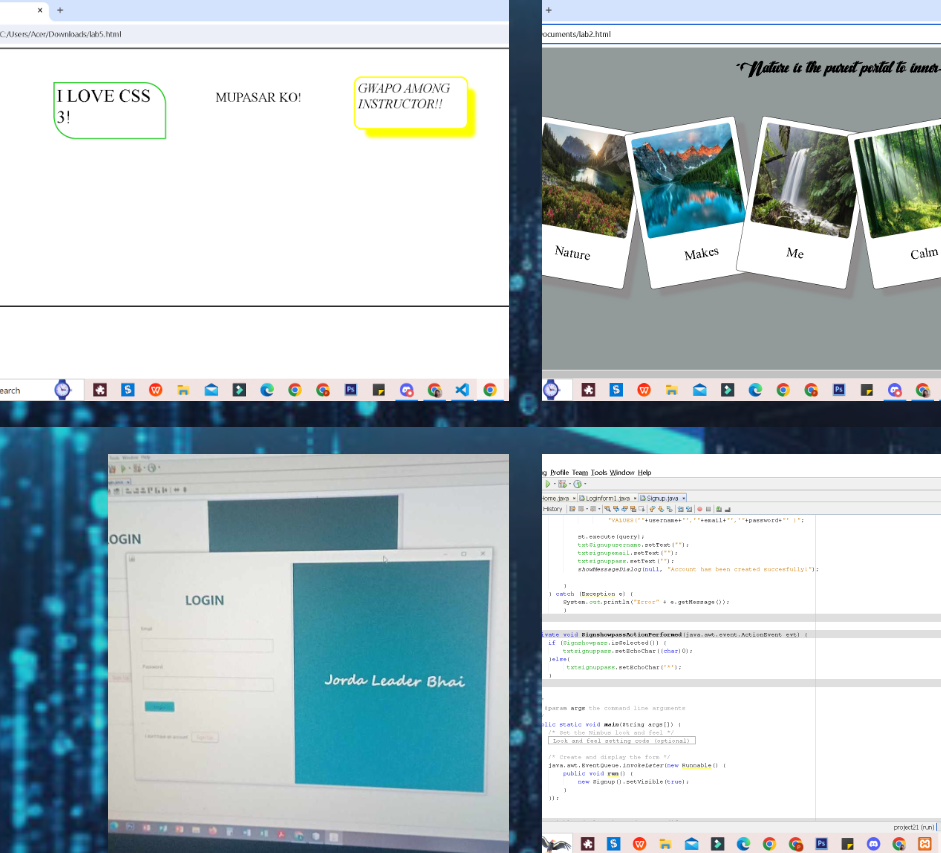
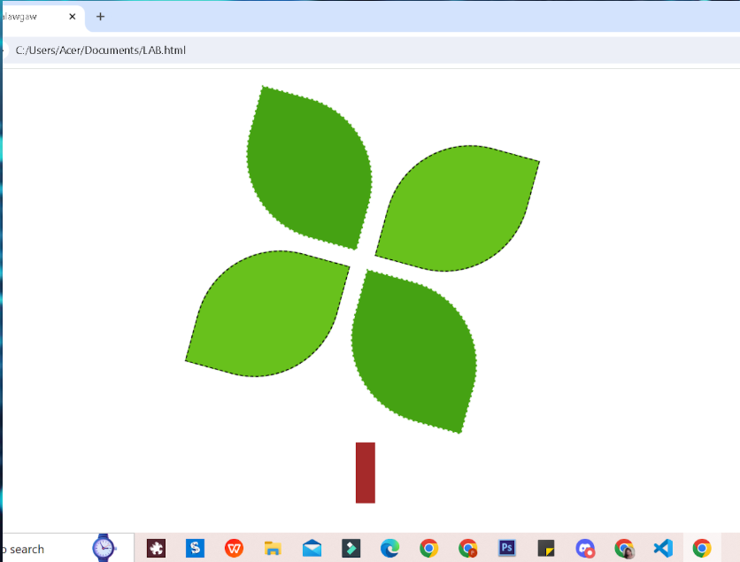

BS Information Technology Student
Hello, I’m Gilbert M. Galos.
A college student from Davao del Norte State College, developing practical skills in programming, web development, networking, and problem-solving.
Open to learning opportunities
About me
Learning IT through
hands-on projects.
I’m a Bachelor of Science in Information Technology student at Davao del Norte State College. My coursework has helped me build a foundation in programming, computer systems, mathematics for IT, and networking.
I learn best by building. From a first animation activity to web-defense, CRUD, and capstone projects, I’m developing the practical skills needed to create useful digital solutions.
01Hands-on
course projects
course projects
02Building a strong
IT foundation
IT foundation
Skills & tools
My growing technical toolkit.
Technologies I use in coursework and personal projects.
Computer Fundamentals
Networking & IT Math
Selected work
Projects I’ve built.
Examples of how I apply technology to practical challenges.

01Capstone • IoT
AIR-BOUND
An IoT-based air-quality platform that presents sensor telemetry, geographic pollution data, alert history, and analytics through a web dashboard.
View project screenshots


02Desktop • CRUD System
RJGC Grocery Store Management
A grocery store management system with product categories, inventory-style product browsing, checkout controls, receipt output, and supporting database records.
View project screenshots



03Web • Travel Guide
VACA Travel Guide
A travel-guide website with a visual landing page, destination categories, travel information pages, a team page, and login and sign-up interfaces.
View project screenshots



04Desktop • Authentication
Secure Registration and Login System
A form-based account registration and login project with an authentication interface and database-query implementation shown in the project work.
View project screenshot

05Class Activity • Front-end
CSS & Animation Exercises
Early front-end exercises demonstrating CSS styling and a simple animated graphic, included as part of my portfolio development work.
View activity screenshot
GitHub repositories and live-demo URLs were not provided. Add those buttons once the relevant project links are available.
Education
Building a strong foundation in IT.
2023–2024
Bachelor of Science in Information Technology
Davao del Norte State College
Coursework includes programming fundamentals, computer hardware and software, mathematics for IT, and introductory networking.
Let’s connect
Have a project or opportunity in mind?
I’d be glad to connect. You can reach me through my school email.